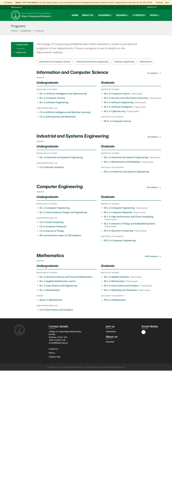
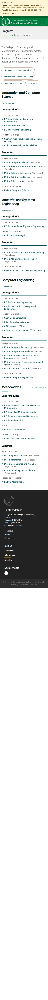
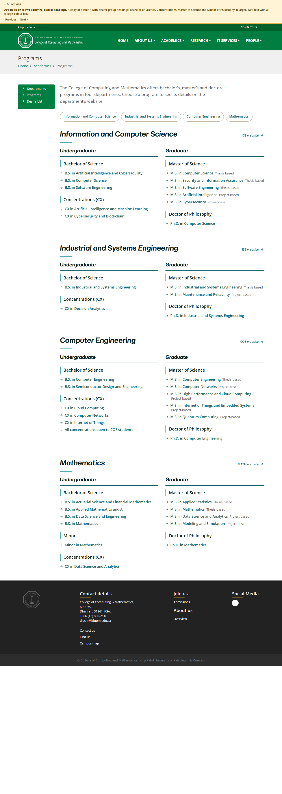
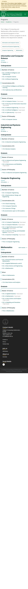
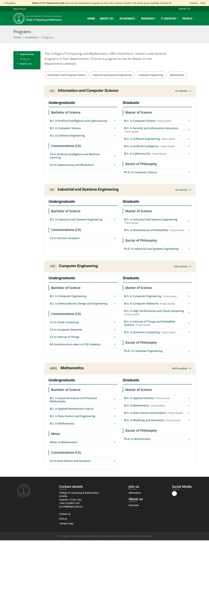
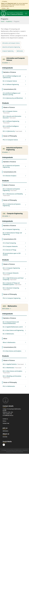
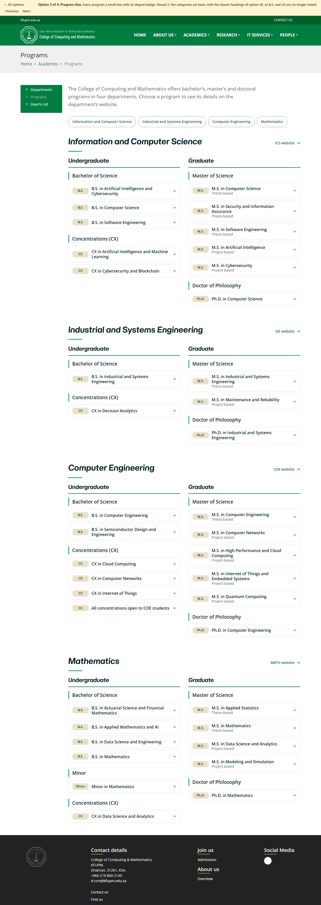
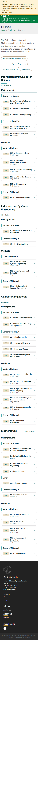

Your round 1 notes, applied. Option 1 is kept exactly as it was (your first choice). Option 1B is a copy of it with clearer group headings: "Bachelor of Science", "Concentrations", "Master of Science" and "Doctor of Philosophy" in larger, dark text with a college-colour bar. Options 2 and 3 get the same headings, and option 3 has its categories back. "By level" and "Expandable" are removed. In all four, the departments now come in the order ICS, ISE, COE, MATH. Compare with today's Programs page.
What Differs
In all four: the same 39 programs and links, the department order ICS, ISE, COE, MATH, a short introduction, and the KFUPM colours and fonts.
| Option | Layout | Group headings | How a link looks clickable |
|---|---|---|---|
| 1 Two columns | Each department, Undergraduate beside Graduate | As round 1: small grey capitals | Turquoise text with an arrow in front |
| 1B Two columns, clearer headings | As 1 | Larger dark text with a college-colour bar | As 1 |
| 2 Department cards | The same columns inside one card per department | As 1B | Full-width rows with a chevron that light up |
| 3 Program tiles | The same columns; each program is a small box | As 1B (the categories are back) | A box with a degree badge and an arrow |
-


Option 1 · your first choice, unchanged
Two columns
Each department with Undergraduate beside Graduate. Small labels group the programs: Bachelor of Science, Concentrations, Master of Science, Doctor of Philosophy. Buttons at the top jump to each department.
- Good for
- The lightest look; reads like a clear list.
- Watch out
- Four departments one after another, so it scrolls.
-


Option 1B · option 1 with clearer headings
Two columns, clearer headings
Option 1 with the group headings fixed: "Bachelor of Science", "Concentrations (CX)", "Master of Science" and "Doctor of Philosophy" are larger, dark and marked with a college-colour bar, so each group is easy to find.
- Good for
- Option 1's light look, with groups that stand out.
- Watch out
- A little longer than option 1, because the headings are bigger.
-


Option 2
Department cards
Each department in its own card, with its code and name in a beige header. Every program is a full-width row with a chevron. Round 2: the clearer group headings of option 1B.
- Good for
- The clearest "this is clickable" signal, and big targets on phones.
- Watch out
- More lines and boxes than option 1.
-


Option 3
Program tiles
Each program is a small box with its degree badge (B.S., CX, M.S., Ph.D.). Round 2: the categories are back with the clearer headings of option 1B, so bachelor's programs and concentrations are no longer mixed.
- Good for
- Seeing the degree type at a glance, and an obvious click target.
- Watch out
- The longest page: every program takes a box. The badge now repeats the heading above it; it can go if you prefer.
Things to Know
- Mix and match. The layout, the headings and the link look are separate parts: for example, option 1B's headings with option 2's link rows, or option 1 with option 3's boxes.
- Program names, written one way. Today's page mixes styles ("MS (Project-based) in…", "M.S. (Thesis-based) in…", "Concentration (CX) Program in…"). Here every name follows one pattern: "B.S. in…", "CX in…", "M.S. in…", "Ph.D. in…", with "Thesis-based" or "Project-based" as a small note. Within each master's list, thesis-based programs come first.
- The links go to the department websites, as today. They open in the same tab; today's page opens a new tab each time.
- Text to confirm: the introduction, and "All concentrations open to COE students" (today: "Concentration Programs Available to COE Students").
- In Sitefinity: no pop-ups, so a Content block is fine.